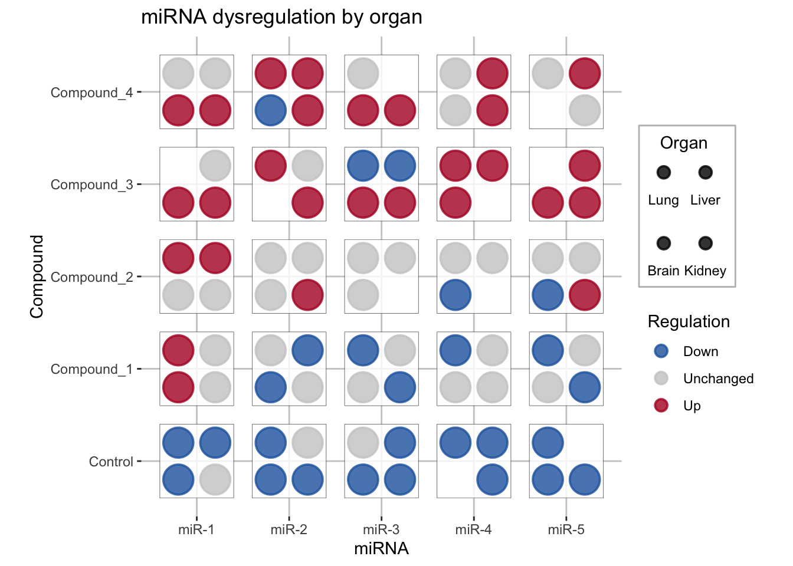
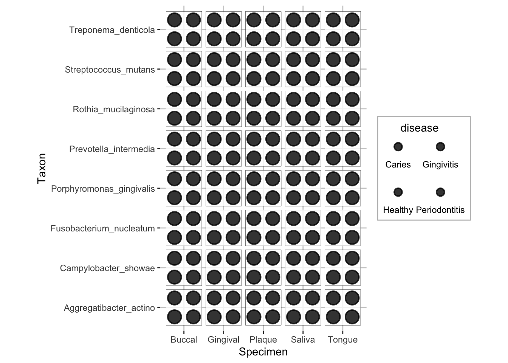
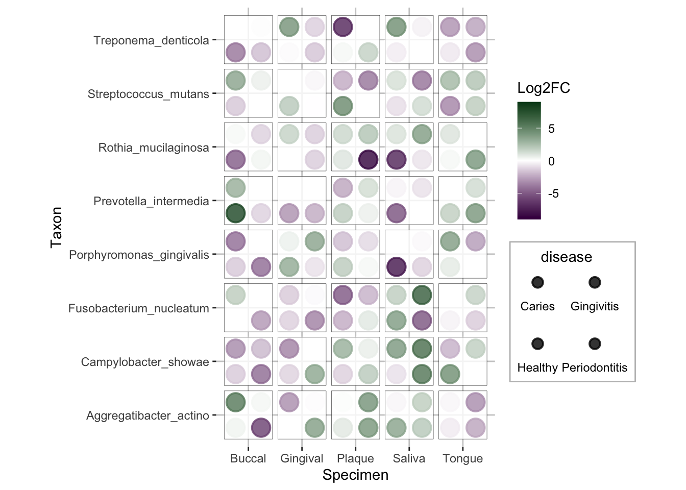
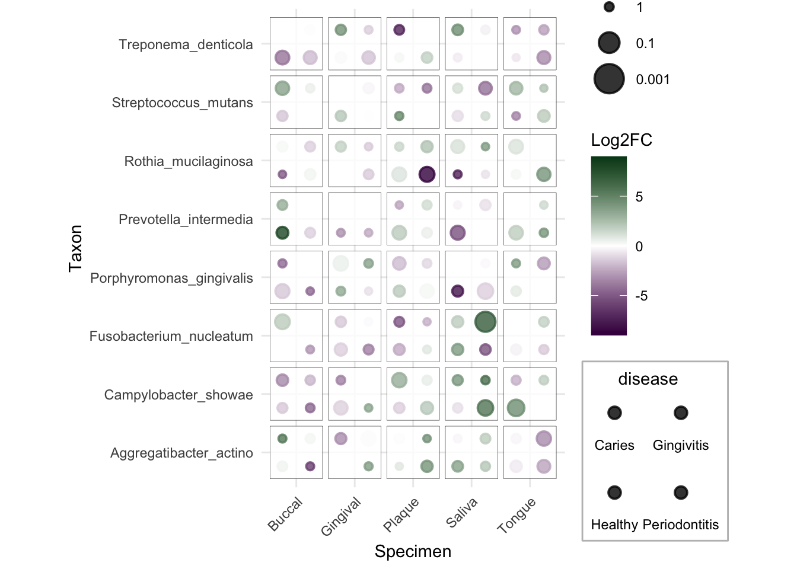
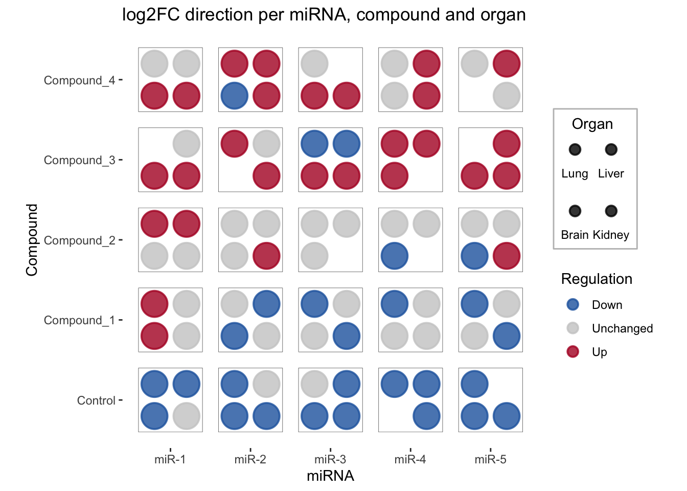
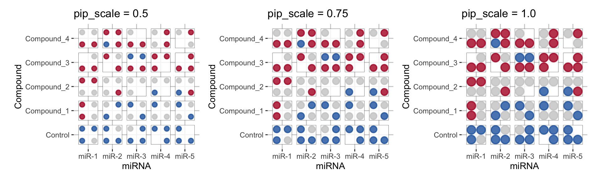

Quick start
The ggdiceplot package in R is an extension of the ggplot2
package for creating dice-based visualizations. Each
tile acts as a die face where dot positions (pips) represent different
categories, allowing up to 6 categorical variables to
be displayed simultaneously.
It provides geom_dice() as the main geom, plus
theme_dice() and scale_dots_discrete() for
styling.
✍️ author → Matthias Flotho
📘 documentation → github
📄 citation → Flotho, Flotho & Keller, Bioinformatics 2026

Installation
To get started with ggdiceplot, you can install it
directly from CRAN using the install.packages function:
Basic usage
The ggdiceplot package uses geom_dice() to
display categorical presence/absence using traditional dice dot
patterns. Each pip position on a tile corresponds to a specific category
level.
The input data should be in long format — one row per dot (category present in a given tile).
Here’s a basic example using the bundled
sample_dice_data2 dataset, which contains microbial taxa
across disease conditions and specimen sites:
library(ggplot2)
library(ggdiceplot)
data("sample_dice_data2", package = "ggdiceplot")
toy_data <- sample_dice_data2
ggplot(toy_data, aes(x = specimen, y = taxon)) +
geom_dice(
aes(dots = disease, width = 0.9, height = 0.9),
na.rm = TRUE,
show.legend = TRUE,
pip_scale = 0.9,
ndots = length(unique(toy_data$disease)),
x_length = length(unique(toy_data$specimen)),
y_length = length(unique(toy_data$taxon))
) +
theme_dice() +
labs(x = "Specimen", y = "Taxon")
Key features
→ Mapping fill to a continuous variable
You can map fill to a continuous variable like log2
fold-change to show effect sizes. Missing values appear as empty (white)
pips.
lo <- floor(min(toy_data$lfc, na.rm = TRUE))
up <- ceiling(max(toy_data$lfc, na.rm = TRUE))
mid <- (lo + up) / 2
ggplot(toy_data, aes(x = specimen, y = taxon)) +
geom_dice(
aes(dots = disease, fill = lfc, width = 0.9, height = 0.9),
na.rm = TRUE,
show.legend = TRUE,
pip_scale = 0.9,
ndots = length(unique(toy_data$disease)),
x_length = length(unique(toy_data$specimen)),
y_length = length(unique(toy_data$taxon))
) +
scale_fill_gradient2(
low = "#40004B", high = "#00441B", mid = "white",
na.value = "white", limit = c(lo, up), midpoint = mid,
name = "Log2FC"
) +
theme_dice() +
labs(x = "Specimen", y = "Taxon")
→ Mapping size to significance
Map size to -log10(q) so that more
significant pips appear larger. Combined with fill, this creates a
domino plot encoding both effect size and statistical
significance.
minsize <- floor(min(-log10(toy_data$q), na.rm = TRUE))
maxsize <- ceiling(max(-log10(toy_data$q), na.rm = TRUE))
midsize <- ceiling(quantile(-log10(toy_data$q), 0.5, na.rm = TRUE))
ggplot(toy_data, aes(x = specimen, y = taxon)) +
geom_dice(
aes(dots = disease, fill = lfc, size = -log10(q), width = 0.9, height = 0.9),
na.rm = TRUE,
show.legend = TRUE,
pip_scale = 0.9,
ndots = length(unique(toy_data$disease)),
x_length = length(unique(toy_data$specimen)),
y_length = length(unique(toy_data$taxon))
) +
scale_fill_gradient2(
low = "#40004B", high = "#00441B", mid = "white",
na.value = "white", limit = c(lo, up), midpoint = mid,
name = "Log2FC"
) +
scale_size_continuous(
range = c(2, 8),
limits = c(minsize, maxsize),
breaks = c(minsize, midsize, maxsize),
labels = c(10^minsize, 10^-midsize, 10^-maxsize),
name = "q-value"
) +
theme_minimal() +
theme(
axis.text.x = element_text(angle = 45, hjust = 1),
legend.key = element_blank(),
legend.key.size = unit(0.8, "cm")
) +
labs(x = "Specimen", y = "Taxon")
→ Categorical fill mapping
Use scale_fill_manual() to map a
categorical variable to pip color. This is useful for
showing regulation direction (up/down/unchanged).
data("sample_dice_miRNA", package = "ggdiceplot")
df_dice <- sample_dice_miRNA
direction_colors <- c(Down = "#2166ac", Unchanged = "grey80", Up = "#b2182b")
ggplot(df_dice, aes(x = miRNA, y = Compound)) +
geom_dice(
aes(dots = Organ, fill = direction, width = 0.8, height = 0.8),
show.legend = TRUE,
pip_scale = 1.0,
ndots = length(levels(df_dice$Organ)),
x_length = length(levels(df_dice$miRNA)),
y_length = length(levels(df_dice$Compound))
) +
scale_fill_manual(values = direction_colors, name = "Regulation") +
theme_dice() +
theme(
axis.text.x = element_text(angle = 0, hjust = 0.5),
panel.grid = element_blank()
) +
labs(
title = "log2FC direction per miRNA, compound and organ",
x = "miRNA", y = "Compound"
)
→ Controlling pip scale
The pip_scale parameter (0–1) controls pip diameter as a
fraction of the maximum available space. pip_scale = 1.0
fills the die face fully; 0.75 (default) leaves some
breathing room.
library(patchwork)
p1 <- ggplot(df_dice, aes(x = miRNA, y = Compound)) +
geom_dice(
aes(dots = Organ, fill = direction, width = 0.8, height = 0.8),
pip_scale = 0.5,
ndots = length(levels(df_dice$Organ)),
x_length = length(levels(df_dice$miRNA)),
y_length = length(levels(df_dice$Compound))
) +
scale_fill_manual(values = direction_colors) +
theme_dice() + labs(title = "pip_scale = 0.5") +
theme(legend.position = "none")
p2 <- ggplot(df_dice, aes(x = miRNA, y = Compound)) +
geom_dice(
aes(dots = Organ, fill = direction, width = 0.8, height = 0.8),
pip_scale = 0.75,
ndots = length(levels(df_dice$Organ)),
x_length = length(levels(df_dice$miRNA)),
y_length = length(levels(df_dice$Compound))
) +
scale_fill_manual(values = direction_colors) +
theme_dice() + labs(title = "pip_scale = 0.75") +
theme(legend.position = "none")
p3 <- ggplot(df_dice, aes(x = miRNA, y = Compound)) +
geom_dice(
aes(dots = Organ, fill = direction, width = 0.8, height = 0.8),
pip_scale = 1.0,
ndots = length(levels(df_dice$Organ)),
x_length = length(levels(df_dice$miRNA)),
y_length = length(levels(df_dice$Compound))
) +
scale_fill_manual(values = direction_colors) +
theme_dice() + labs(title = "pip_scale = 1.0") +
theme(legend.position = "none")
p1 + p2 + p3
Gallery of ggdiceplot examples
For more dice plot examples, check the posts below: